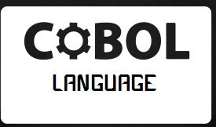

Languages and
Projects
- C
- Implementation of Karatsuba Algorithm for multiplication of very large non-negative integers
- C++
- Emulation of virtual solar system
- Implementation of image warping on scene images
- COBOL
- Debit card transaction processing system with DB2 and JCL
- Airline reservation system using DB2 database and VSAM file system
- JCL(Job Control Language)
- Wrote several JCL job scripts to for batch programs
- PHP
- Online Book-store system
- Inventory management system
- Python
- Games using pygame library
- Java
- Automated screen capture tool
- Perl
- Developed a web crawler to download and parse URL content using Perl regular expressions
- Stored URLs in MySQL database and iteratively added as they were found in successive links
- Objective-C
- Developed an iPad version for Nationwide Children's myChildren's iOS application
- Added features to Ohio health's mobile application including support for surveys and facility to update patients' profiles
- Upgraded tools4U app to support for Diabetes and Complex care journal.
- Patients can now also browse through available medical content
Hybrid, Multi-paradigm, static, fast works on lower level. Excemllent choice for educational and scientific purpose.

Business oriented, procedural, Scalable and Efficient. Allows code embedding. Mostly used in government and business organizations
Open source web development language. CGI and access control support.Object oriented. Undergoing rapid development.
 Scripting language. Although slow in comaprison to other languages provides vast array of inbuilt functions. Provides efficiant file manipulation and string parsing functionalities
Scripting language. Although slow in comaprison to other languages provides vast array of inbuilt functions. Provides efficiant file manipulation and string parsing functionalities
Hybrid language. Provides inheritance and encapsulation functionalities. Also features garbage collection, objects and multithreading support